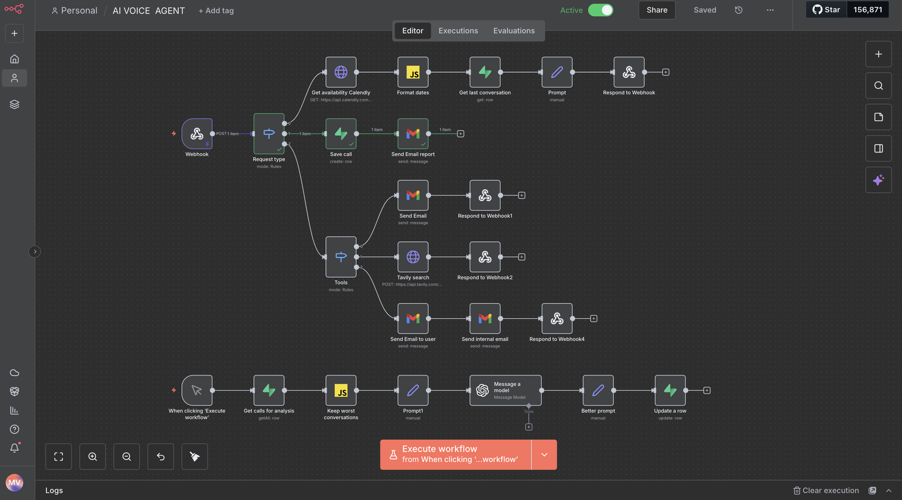

AI Voice Receptionist
A voice agent that answers inbound calls for a dental clinic — checking live appointment availability, answering questions it doesn’t already know the answer to, logging every conversation, and reviewing its own worst calls to improve its prompt.
What needed solving
A clinic with no after-hours coverage loses patients silently. Calls go unanswered in the evening and at weekends, and the caller books somewhere else.
Reception staff also lose time each morning working through voicemails and transferring appointment requests into the calendar by hand.
This build set out to answer a specific question: could a voice agent hold a real intake conversation — checking live availability, looking things up it doesn’t know, and remembering callers between calls — well enough that no call goes unanswered?
How the system works

Vapi handles the voice layer
Vapi answers the inbound call and manages the spoken conversation — speech recognition, turn-taking and voice output. When it needs data or an action it cannot perform itself, it posts the request to an n8n webhook and waits for a response.
A rules router splits the request by type
The webhook payload hits a rules-based switch that reads what the agent is asking for and routes it down one of three paths: an availability check, a call-logging request, or a tool call.
Live availability from Calendly
For booking requests, the workflow queries the Calendly API for real open slots, formats the dates into something speakable, pulls the caller’s last conversation from Supabase for context, builds a prompt from both, and responds to the webhook so Vapi can say it out loud — all inside the live call.
Tools the agent can reach for
A second rules router gives the agent capabilities beyond its own knowledge: sending an email, running a Tavily web search when a caller asks something it has no stored answer for, or sending a confirmation to the caller alongside an internal notification to the clinic. Each branch responds to its own webhook so the agent gets the result mid-conversation.
Every call written to Supabase
Calls are created as rows in Supabase as they happen, and prior conversations are read back by caller on subsequent calls. The database is what lets the agent recognise a returning caller instead of starting cold every time.
Email reporting
Once a call is logged, a report goes out over Gmail so the clinic has a written record of what was discussed without opening a dashboard.
The agent reviews its own worst calls
A separate flow pulls all logged calls from Supabase, a JavaScript node filters down to the worst-performing conversations, and an OpenAI model reads them and proposes an improved system prompt. The revised prompt is written back to the database. The agent gets better from its own failures rather than from someone manually reading transcripts.
Tools used
What the system delivers
The agent answers calls at any hour and checks genuine Calendly availability during the conversation rather than promising a slot it cannot confirm.
Tavily search means a caller asking something outside the agent’s stored knowledge gets a real answer instead of a dead end.
Supabase gives it memory. A returning caller is recognised, and their previous conversation is available as context on the next call.
The self-review loop is the part I’d build again. Pulling the worst conversations and having a model rewrite the system prompt turns every bad call into an improvement instead of a complaint.
Have a process like this?
Tell me what your team keeps doing by hand and I’ll tell you what it would take to automate.